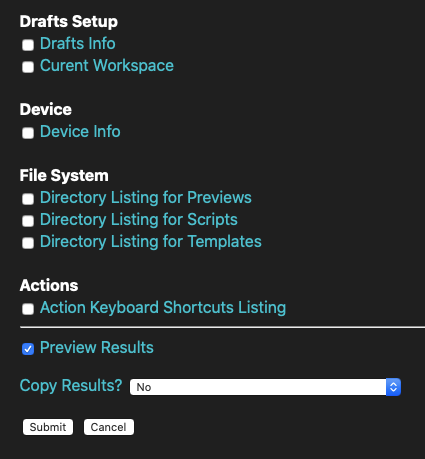

Okay, let’s take a bit of a sideways step and try a different action to verify what Drafts sees in your Previews directory.
Here’s an action I’ve put together which can query some information about Drafts.
I expect I’ll expand this v1 in case it proves useful in helping to track down issues in people’s Drafts set-up here on the forum. I figure it might be helpful to have a basic diagnostic/info gathering tool of sorts available.
When you run the action, you should get a prompt like this:

You can tick any boxes you are interested in (beware any file system querying via Drafts can be very slow) and it will output the results based on the options you select at the bottom.
The one we’re interested in here if the “Directory Listing for Previews”, and what Drafts can “see” inside that directory structure in iCloud.
Set the copy results to “As MultiMarkdown” so that the final results are copied to the clipboard in a format you can just paste into a forum post. But, if there is the chance that you could generate a large listing choose the “As MultiMarkdown in a Hidden Details Section” and it will wrap it in a spoiler section so it won’t make the post excessively long by default.
When I run it in my current (farirly ‘clean’) state, my preview for just selecting this one option then comes back like this:

And the clipboard content when pasted into the forum post produced this:
Recon Results
Previews Listing
Library/Previews/images/
Library/Previews/images/armour.jpg
Library/Previews/images/more armour.jpeg
Library/Previews/images/dummy.txt
Generated at: Thu Dec 17 2020 22:52:38 GMT+0000 (GMT)
Generated by: RECON-01
I’m not promising that this will definitely provide any additional insight for this issue, but by testing with a separate action which is explicitly running the listing, if there is a deviation in results, that will give us another data point and a potential clue as to what is beleaguering you.


{kind=link}